Brownian dynamic simulation study on self-assembly of ERPCs
▶Purpose:
1. Study morphology and diffusion of building blocks in dilute solution.
2. Verify the dimerization of the shell chain and the core chain.
3. Confirm the formation of ERPC.
In this part, we used a molecular simulation package named GALAMOST.[1]
Figure1. The representative architecture of shell polypeptide (A) and core polypeptide (B). There are 29 beads in shell polypeptide and 19 beads in core polypeptide, with blue and yellow beads representing C and S components, gold and silver representing P and A components, respectively,
▶Model and Method:
We use a coarse-grained model to represent (EK)10-TAT-LZE and LZR-ELP, as illustrated schematically in Fig.1, according to the estimated ratio of diameter of two building blocks. The length of the ELP part is about 15 while the length of the leucine zipper is about 14 and the length of the functional area is about 5. In Fig.1, each segment of C arms and P arms were given 7 positive charges and 7 negative charges respectively.
In Brownian dynamics, the equation of motion of each bead in the system is governed by Langevin equation
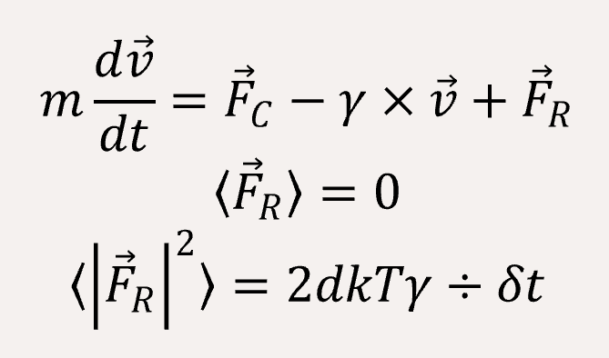
where v ⃗ is the velocity of the bead, γ is the friction coefficient. We fix γ = 1.0 and constructor of a Brownian NVT thermostat object for this system, in which we set the box as 35x35x35, and set the temperature is 1.
In order to fit a certain rigid amino acid chain, we apply a bond angle potential to the coarse-grained bead chains,
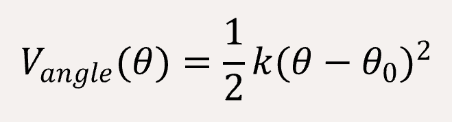
where k is the potential constant and θ0 is the equilibrium angle. Here we set θ = 180°C for C and P types.
The non-bonded interaction between the coarse-grained beads are represented by Lennard-Jones (LJ) potential,
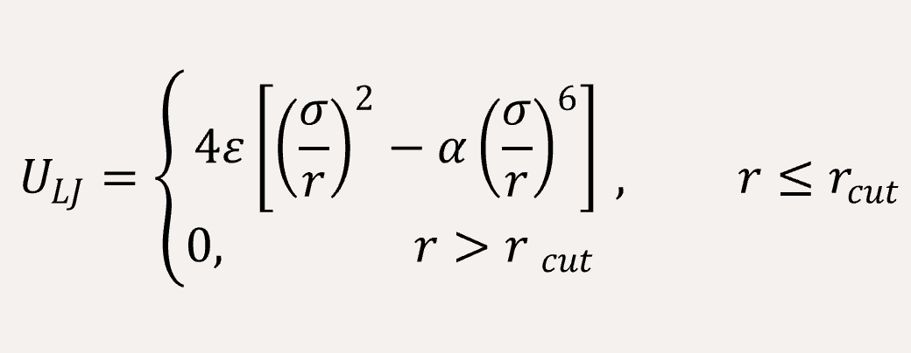
in which ε and σ are the well depth and the bead diameter, respectively. Here r is the distance between two beads, and in this work rcut = 3.0σ is the cutoff distance beyond which the LJ potential is equal to 0. We set the σ = 1 and ε = 1 for all particle types, as well as the α for S-S is 3.0 and for Z-Z is 0.5 to fit the actual situation since the α positively correlated with the interaction between the two types of particles.
The long-range coulomb interaction between the C type and P type are represented by Ewald summation theory handled in the reciprocal sum.[2]
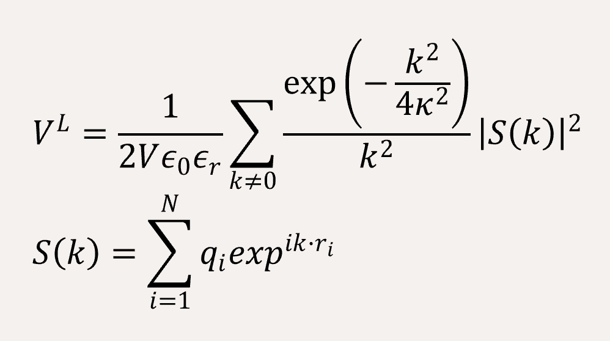
The self-energy term
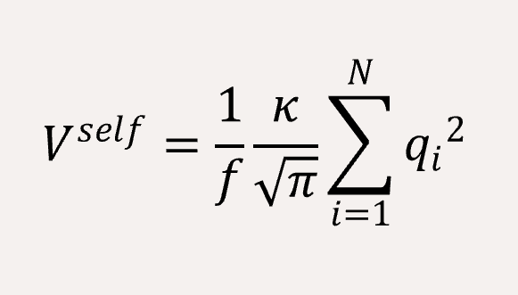
The polypeptide chains are constructed by connecting adjacent beads together with FENE bond potential,
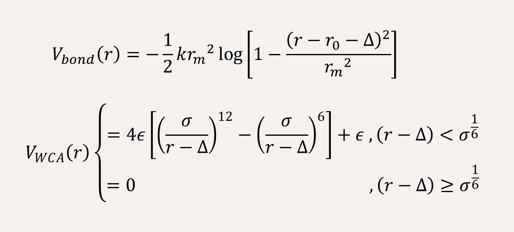
where k is attractive force strength, r0 is equilibrium length, rm is maximum bond length. Here we sent k=100, rm= 1.5 for ‘C-S’, ‘P-Z’, and for others k=500, rm= 0.96.
A time step of δt = 0.005 is used, and the total simulation steps are 5x106. All simulations are performed using with GALAMOST [3] while the results are showing in VMD.[4]
▶Result & Discussion:
At first, we need to ensure our model can exhibit the same conformation with experiment. Since our experiment of assembly may be done by two steps, our self-assembly simulation is also conducted by two separate steps in order to reproduce the actual situation. Totally, simulation have three parts.
Study conformation of building blocks in dilute solution.
Before studying the properties of self-assembly, we first simulate the conformation of LZR-ELP and (EK)10-TAT-LZE. The bond angle was set to 180° for C type and P type to give segment of leucine zipper rigidity, meanwhile we set lower k (k=100) value and larger rm(rm=1.5) value for FENE bond potential to increase the flexibility of connection between different types of beads (Fig.2). The segment of leucine zipper has a stronger rigidity thus they can maintain a certain configuration in solution while the segment of ELP is very flexible and exhibits a configuration of random coil in dilute solution. This result shows good anastomosis with CD spectrum and secondary structure prediction of the sequence design, consequently, increasing our simulation credibility.
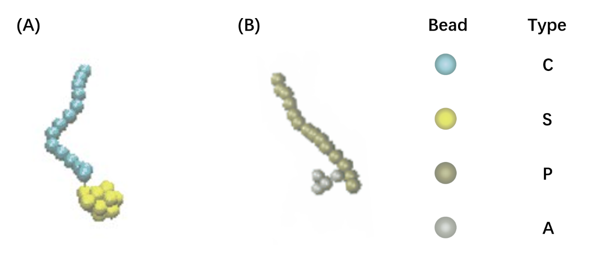
Figure2. The model of LZRM-ELP(A) and (EK)10-TAT-LZE(B).
Verify the dimerization between shell chain segment and core domain unit.
The (EK)10-TAT-LZE and LZR-ELP were connected by dimerization of leucine zippers, which is mainly achieved by hydrophobic interaction and electrostatic interaction at certain sites. Our leucine zippers have α-helix structure with some charged residues and hydrophobic residues on different directions at one same side of the helix, besides, the leucine zippers of LZR-ELP and (EK)10-TAT-LZE have different charges so assembly specificity can be obtained. But in the coarse-grained simulation, we can see the model only have one kind of bead in one side of the chain, so this kind of specificity of dimerization is hard to be accurately reproduced by our model because we can’t make beads anisotropic to let one bead exhibit different properties at different directions. Therefore, we simplified the interaction of leucine zippers and explored whether dimerization of LZR-ELP and (EK)10-TAT-LZE can be observed in simulation by studying this simplified electrostatic interaction and hydrophilic-hydrophobic interaction from a pair of building blocks.
The C and P segment were given 7 positive charges and 7 negative charges respectively to set up coulomb interaction. The rcut values of Lennard-Jones (LJ) potential for S-C, S-P, S-Z, C-Z, Z-P were set to 1.12 in order to reproduce the effects of hydrophilic-hydrophobic interaction. The simulation result is shown in Fig.3
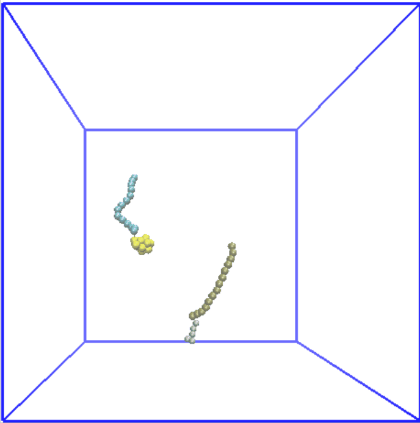
Figure3. Dimerization between (EK)10-TAT-LZE and LZR-ELP.
We want to achieve the direction-specific dimerization of the LZR-ELP and (EK)10-TAT-LZE, namely, to ensure that the ELP and (EK)10 segment stay at different ends of dimer rather than at the same side. ELP segment shows to be hydrophobic while (EK)10 is hydrophilic at 37°C and areas with same kind of water affinity tends to be gathered at the same area. So we used this property of ELPs at 37°C to compensate for the loss of directional specificity caused by coarse granulation, and correct dimer can be observed.
Simulate the formation of ERPC.
Figure4. Assembly of LZR-ELP.
In our design, assembly region and functional region are separate to (EK)10-TAT-LZE and LZR-ELP. And TEM result indicate that LZR-ELP can be assembled by itself. Thus, the simulation of ERPCs’ assembly is conducted by assembly of LZR-ELP itself and assembly between (EK)10-TAT-LZE and LZR-ELP.
Therefore, we set the α value of Lennard-Jones (LJ) potential for S-S to 2.0, while the α value for C-C is set to 0.5. 80 chains are randomly generated in a box of 35x35x35. Result was shown in Fig.4, which reveals that micelle with relatively uniform particle size is formed, and it is consistent with the results of experiment part.
For assembly between L(EK)10-TAT-LZE and LZR-ELP, since the dimerization of leucine zipper is regulated mainly by hydrophobic and electrostatic interaction while hydrogen bonding also plays a supporting role, the interaction between leucine zipper can be strong and complex. To make it feasible to simulate LZR-ELP as the core domain and (EK)10-TAT-LZE as the "shell" with our coarse-grained model, we connect the (EK)10-TAT-LZE and LZR-ELP covalently to simulate the assembly of ERPCs, based on the simulation result of Fig. 3, which indicated that the dimerization of the leucine zipper can be achieved and the fact that hydrogen bond cannot be accurately reproduced in our coarse-grained Brownian dynamic simulation.
C segment and P segment are connected through 6 FENE bonds, 40 building blocks are randomly generated in the box under the same conditions (Fig.5). The result demonstrates that the building block forms a spherical micelle with (EK)10 at the outermost, ELPs in inner part.
Figure5. The assembly of ERPC.
In sum, we simulated the process of generating (EK)10-TAT-LZE/LZR-ELP amphiphilic binary complex and the assembly of ERPCs using Brownian dynamic, and the result is highly consistent with the experiment.
▶Reference:
[1] Zhu YL, Liu H, Li ZW, Qian HJ, Milano G, Lu ZY. GALAMOST: GPU-accelerated large-scale molecular simulation toolkit. J. Comput. Chem. 2013, 34 (25): 2197-2211.
[2] Beckers JVL., Lowe CP, De Leeuw SW. An Iterative PPPM Method for Simulating Coulombic Systems on Distributed Memory Parallel Computers, Molecular Simulation. 1998, 20(6): 369-383
[3] GALAMOST web page: http://galamost.ciac.jl.cn/
[4] Humphrey W, Dalke A, Schulten K. VMD - Visual Molecular Dynamics, J. Mol. Graph. 1996, 14(1): 33-38,27-28.
Steered Molecular Dynamic Simulation
▶Steered molecular Dynamics Simulation on the interactions between LZR-LZE
In order to further examine the stability of out assembly, we want to know how strong the interactions to connect our building blocks, namely, the interactions between LZR and LZE are. However, due to the limit of computing resources, we are unable to build a system big enough at nanometers level. Rather, we build the system of a single LZR-ELP and a single (EK)10-TAT-LZE. Then we use SMD to stretch one chain, while fixing the other, at a constant rate to break the interactions and record the steered force used.
▶Model and Method
The original structure of LZR-ELP and (EK)10-TAT-LZE is gained as stated in Sequence Design. Construction of the system is performed using visual molecular dynamics (VMD) [1]. We generate water using Solvate Plugin. Then we add Na+ and Cl- to the system using autoionize Plugin, making the concentration of ions 0.15 M and the whole system is electrically neutral. Now the system is of 152485 atoms with 49350 water molecule, 291 Na+ and 298 Cl-(Fig. 1).
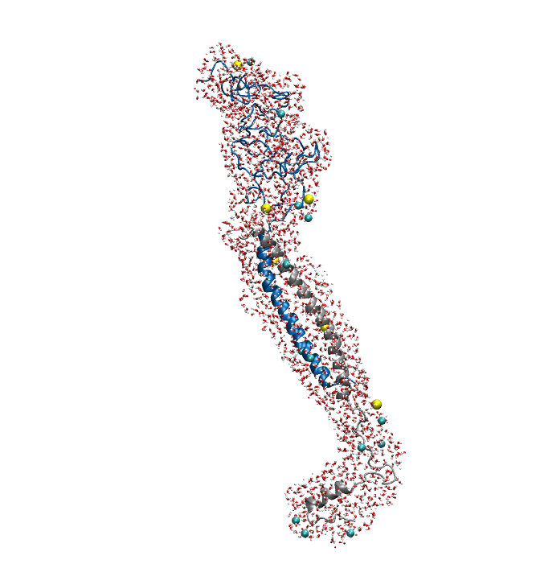
Figure1. An overview of the system. Protein is shown in New Cartoon, with LZR-ELP in blue and (EK)10-TAT-LZE in silver. Water within 4 Å of protein is shown in Licorice with Na+ colored in yellow and Cl- colored in cyan. (B).
Then we equilibrate the system through the following steps:
1. We constrain the protein in the system while relax all of the water and ions and run 1 ns.
2. We relax the protein as well and run it 20 ns while using a secondary structure restrain to the LZR and LZE and forcing them maintain the secondary structure of helix (Fig. 2).
Figure2. Equilibrium simulation of (EK)10-TAT-LZE /LZR-ELP.
After the system being well equilibrated, we set up SMD to stretch (EK)10-TAT-LZE while fixing LZR-ELP: Secondary structure restrain is used during SMD simulation. Constraints on LZR-ELP is used to fix the protein. A pulling speed of 0.5 Å /ns and a force constant of 10 kcal/molA2 are used during SMD simulations[2].
▶MD protocol
All MD simulations are run in NAMD using the CHARMM36m force field for proteins[3]. Constant temperature (310 K) and pressure (1 atm) were maintained. A time step of 2 fs was used with short-range nonbonded interactions updated every time step and long-range nonbonded interactions updated every three timesteps. The cutoff for short-range nonbonded interactions is 12.0 Å. The Parti-cle Mesh Ewald (PME) method is used for long-range nonbonded interactions.
▶Results and Discussion
We do Steered Molecular Dynamics to stretch (EK)10-TAT-LZE away from LZR-ELP. Here is the result of our SMD simulation (Fig. 3).
Figure3. SMD simulations of stretching (EK)10-TAT-LZE away from LZR-ELP.
We record the distance of (EK)10-TAT-LZE and LZR-ELP by measuring the distance between center of mass of LZR and LZE (Fig. 4). Stretched by the additional force, the distance is increasing along the simulation as we expected. Then we record the force (Fig. 5) and run average of force vs. time with averages taken over 0.5 ns. We can conclude that the force reaches its maximum of 1074.8 pN at 8.97 ns. The force applied here is extremely huge regarding nonbonded interactions while 600 pN is enough to stretch a NH3 molecule out of a channel!
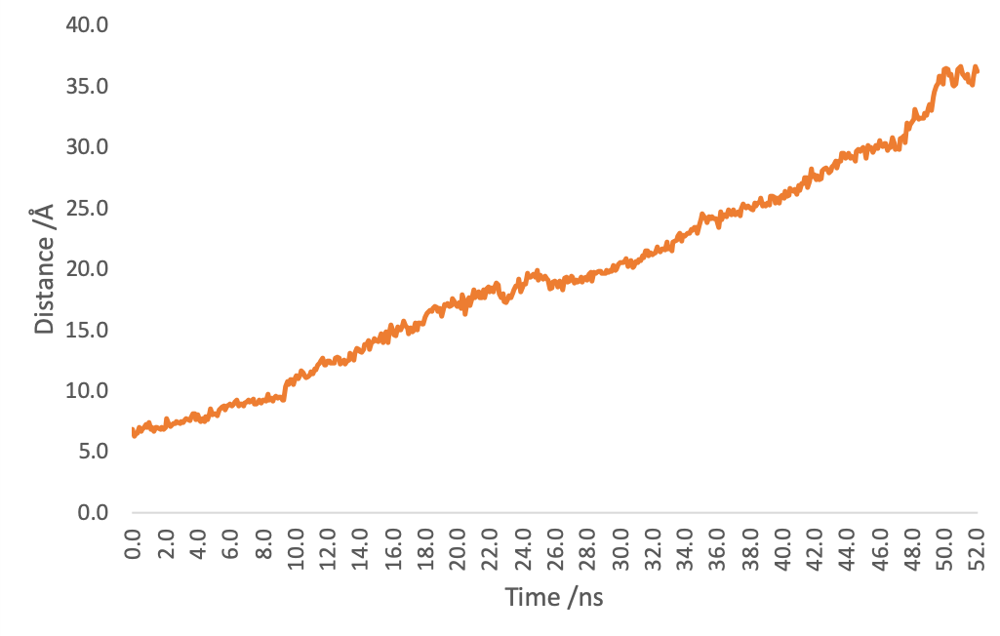
Figure4. Distance of (EK)10-TAT-LZE and LZR-ELP by time.
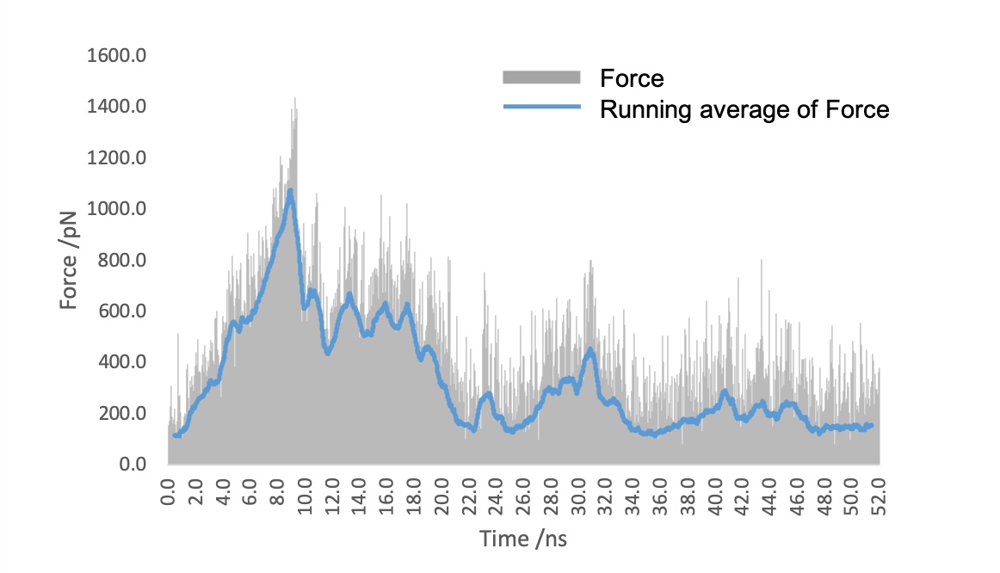
Figure5. The force applied to (EK)10-TAT-LZE to stretch it away from LZR-ELP.
In conclusion, the interactions between LZR-ELP and (EK)10-TAT-LZE are extremely strong [4], and even a single set requires 1074.8 pN to break them up. Considering how many sets we are going to have in an assembly, we can conclude that it is almost impossible to break once they are formed. This strongly suggests that our carrier could be extraordinarily stable, which guarantees the safety of drugs as well as the successful delivery.
▶Reference:
[1]. Humphrey W, Dalke A, Schulten K (1996) VMD: Visual molecular dynamics. J Mol Graph 14:33–38.
[2] Izrailev S, Stepaniants S, Balsera M, Oono Y, Schulten K. Molecular dynamics study of unbinding of the avidin-biotin complex. Biophys. J. 1997, 72(4): 1568–1581.
[3]. Huang J, Rauscher S, Nawrocki G, Ran T, Feig M, de Groot BL, Grubmüller H, MacKerell AD Jr. CHARMM36m: An improved force field for folded and intrinsically disordered proteins. Nat Methods. 2017, 14(1): 71–73.
[4] Hazel A, Gumbart JC. Methods for calculating Potentials of Mean Force (book), 2017